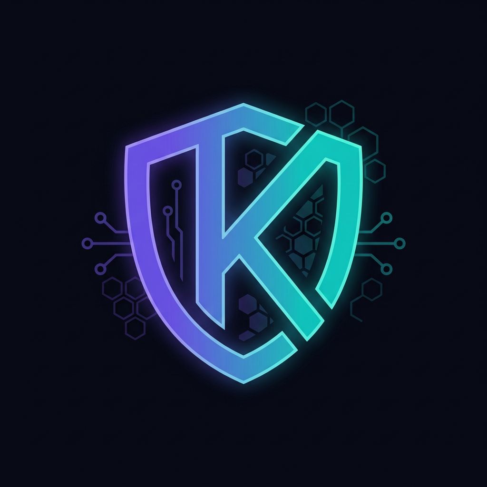

👋 你好，我是
资深网络安全工程师 · 原厂项目经理（P9）。拥有 6 年网络安全行业从业经验， 自初级工程师逐步成长至资深工程师，长期专注于安全基础设施建设、 项目交付与项目管理，业务范围涵盖售前测试与售后支持。

关于我
我是一名深耕网络安全领域的原厂工程师与项目经理，目前就职于 某头部网络安全企业。 2020 年以实习生身份入行，五年内从初级工程师（P6）晋升至 资深工程师（P9），并自 2022 年起担任某地市办事处技术负责人。
我同时承担技术交付与项目管理工作，主导过党政机关及国有私营企业的 千万级安全项目建设，业务覆盖零信任、等保、 商密、数据安全等多个方向，工作贯穿安全产品交付、售前测试 与售后支持的全流程。
此外，我还担任职业院校外聘讲师，并参与省市级网络安全赛事命题工作， 持续将一线实战经验回馈行业与教育事业。
工作经历
职级轨迹：实习生 → P6 初级工程师 → P9 资深工程师
负责多地市安全项目交付协调
负责高价值安全项目交付
某头部网络安全企业
项目成果
在大数据实战转型背景下，公司承担零信任体系建设、部分基础安全产品、 安全服务平台以及安全管理中心建设。项目于 2022.12 完成终验， 大数据安全体系建设符合部标要求。
在数字化建设背景下，负责全套平台建设及部分等保与商密建设。 担任项目经理兼安全交付工程师，统筹项目材料输出、平台交付与定制沟通等工作。
主导 2021–2026 年六届市级网络安全赛项的筹备与命题工作， 并协助乙、丙、丁地市开展赛事技术指导与命题工作。
统筹甲、乙、丙、丁四地市的安全项目交付、售前测试与售后协调， 建立标准化交付流程，协助办事处达成每年千万级的市场盈利目标。
证书荣誉
Enterprise Infrastructure
思科认证互联网专家Project Management Professional
项目管理专业人士服务项目经理
IT 服务项目管理教学与社会贡献
核心能力
职业素养
临危不乱，善于拆解并分析问题、探寻解决路径，在复杂交付场景中保持冷静与理性判断。
具备良好的沟通能力，能够准确理解并把握客户的真实诉求， 妥善协调厂商、开发与客户等多方关系。
严于律己、每日三省吾身、坚持持续学习与进步，自初级一路成长为资深， 并将实践经验不断回馈于产品与行业。
联系我
本人目前在职，始终对技术交流、行业合作与教学分享持开放态度， 欢迎就网络安全交付、项目合作及赛事命题等话题随时与我联系。